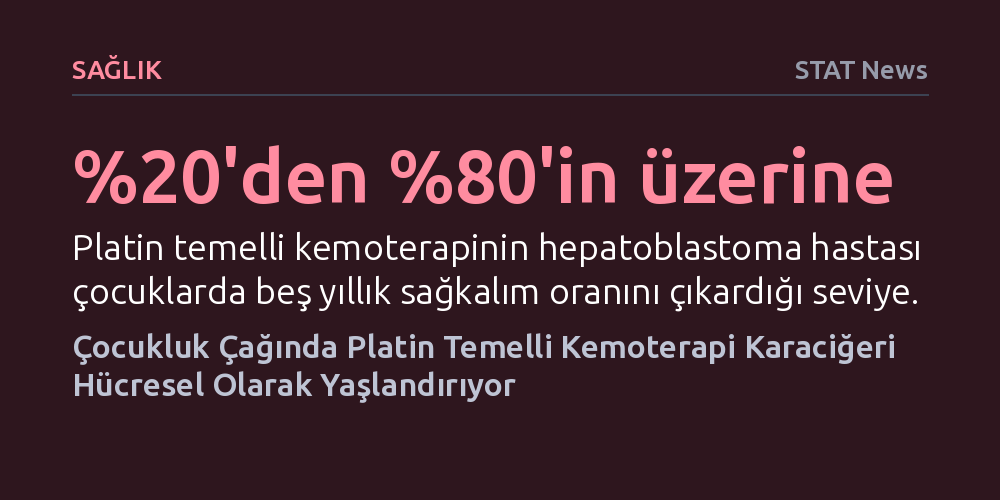

SAGLIK · STAT News · 2026-09-11
Çocukluk çağı karaciğer kanserinde hayat kurtaran platin temelli kemoterapiler, sağlıklı dokuda binlerce mutasyona yol açarak karaciğer hücrelerini yetişkin seviyesinde yaşlandırıyor. Biriken bu genetik hasar, ilerleyen yıllarda ikincil kanser ve kronik organ rahatsızlıkları riskini belirgin şekilde artırabilir.
Çocukluk çağı kanserini yenen bireylerde tedavinin başarıyla tamamlanmasının yetmediğini, kemoterapinin bıraktığı hücresel yaşlanma ve mutasyon yükü nedeniyle ömür boyu yakın takip gerektiğini gösteriyor.

Çocukluk döneminin en sık rastlanan karaciğer kanseri olan hepatoblastoma tedavisinde platin temelli kemoterapi ilaçları tam anlamıyla bir devrim yarattı. Özellikle sisplatin ve karboplatin etken maddeleri sayesinde, daha önce yüzde 20 seviyelerinde seyreden beş yıllık sağkalım oranı yüzde 80'in üzerine çıktı. Bu ilaçlar, doğrudan kanserli hücrelerin DNA yapısını tahrip ederek onları yok etme prensibiyle çalışıyor.
Ancak bu güçlü bileşikler hedeflerini yok ederken çevrelerindeki sağlıklı dokuları da es geçmiyor. İlaçların sağlıklı hücrelerin genetik kodunda mutasyonlara yol açtığı ve ilerleyen yaşlarda yeni kanser risklerini tetikleyebileceği yetişkinlerde biliniyordu; fakat gelişme çağındaki çocukların dokularında nasıl bir tahribat bıraktığı uzun süredir belirsizliğini koruyordu. Science dergisinde yayımlanan yeni bir araştırma, bu hayati tedaviyi alan çocukların karaciğerlerinde meydana gelen kalıcı hücresel değişimi ilk kez ayrıntılı biçimde ortaya koydu.
Araştırmacılar, tümörün cerrahi operasyonla çıkarılmasından önce platin tedavisi görmüş çocukların hem kanserli hem de sağlıklı karaciğer dokuları ile kan örneklerini incelemeye aldı. Çalışmada, dokulardaki en ince DNA hasarlarını dahi hassasiyetle okuyabilen NanoSeq adlı ileri düzey dizileme teknolojisi kullanıldı. Elde edilen veriler; platin almayan, ameliyat öncesi ilaç tedavisi görmeyen çocukların örnekleriyle ve fetal karaciğer dokularıyla karşılaştırıldı.
Analizler sarsıcı bir gerçeği gün yüzüne çıkardı: Platin bileşiklerine maruz kalan çocukların sağlıklı karaciğer dokusunda örnek başına ortalama 2.200 genetik mutasyon oluşmuştu. Bu mutasyon yükü, olağan şartlarda ancak bir yetişkinin karaciğerinde görülebilecek seviyedeydi. Diğer bir ifadeyle, kemoterapi ilaçları çocukların karaciğer hücrelerini biyolojik olarak hızla yaşlandırmıştı.
Üstelik oluşan genetik hasarın doza ve ilaç çeşitliliğine paralel olarak arttığı belirlendi. Yalnızca sisplatin uygulanan çocuklardaki mutasyon yükü belirgin bir seviyedeyken, tedavi protokolünde hem sisplatin hem de karboplatin alan çocuklarda mutasyon sayısının çok daha yüksek oranlara ulaştığı tespit edildi.
Kemoterapi damar yoluyla tüm vücuda yayılan sistemik bir tedavi olmasına karşın, karaciğer hücrelerindeki genetik mutasyon yoğunluğu kandaki hücrelere oranla çok daha yüksek çıktı. Bu durum, karaciğerin platini diğer dokulardan farklı bir biyokimyasal yolla metabolize ettiğini ya da maruz kaldığı DNA hasarını onarma konusunda daha yetersiz kaldığını düşündürüyor. Hatta uzmanlar, karaciğerin başlangıçta tümör geliştirmesinin arkasındaki hassasiyetin de bu mekanizmayla ilişkili olabileceğini belirtiyor.
Araştırmacılar bu bulguların iki temel sonucu olduğunu vurguluyor. İlk aşamada, çocuklukta bu tedaviyi görerek hayatta kalan bireylerin ömür boyu düzenli onkolojik ve hepatolojik taramalardan geçirilmesi gerekiyor; böylece ikincil tümörler ve kronik karaciğer problemleri henüz başlangıç evresinde saptanabilir. İkinci ve daha uzun vadeli hedef ise bu hasar mekanizmasını çözerek, kanser hücrelerini etkili şekilde yok eden ancak çevre dokularda genetik yaşlanmaya yol açmayan yeni nesil kemoterapiler tasarlayabilmek.